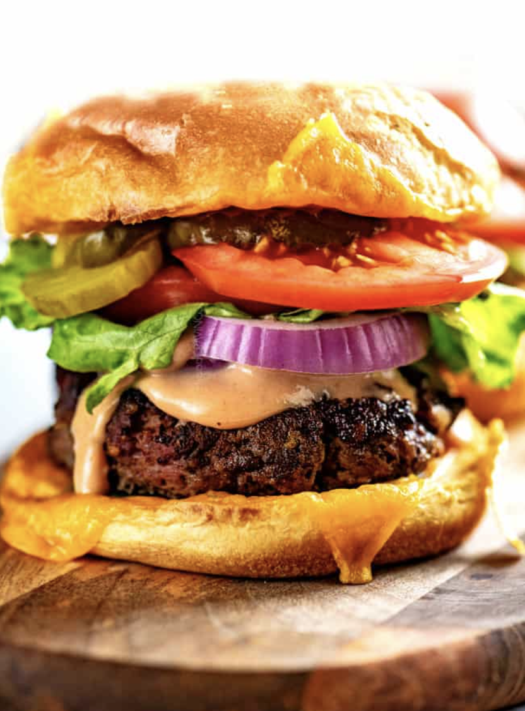

Cheeseburger recipe

Description
The one meal that you can make without being a red seal chef and comes out with consistency.
This juicy tender, and flavourful burger will make you forget about all your troubles.
INGRIEDIENTS
- Brioche bun
- Beef patty
- Havarti, cheddar or gouda cheese
- Jalapenos
Instructions
- First add an egg to a bowl and whisk
- Add ground chuck, panko, shallot, garlic, worchesterchire, oregano , smoked paprika, ground cumin, salt and pepper
- Divide the meat into 4 equal sections
- Roll each section into a loose, big meatball, but dont continue to roll once its taken shape
- Flatten the ball with the palm of your hand. Thus will likely the edges crack, so just push them back together. Make the patties bigger than your bun as they usually shrink while cooking
- Now its time to cook your burger on the stove !!
- Cook the burger on the stove for 5 mins on each side
- Toast the brioche buns with the melted cheese as you wait for the burger to cook
- We've assumed you've cut your desired veggies to layer them on the bun once its toasted
- VOILA